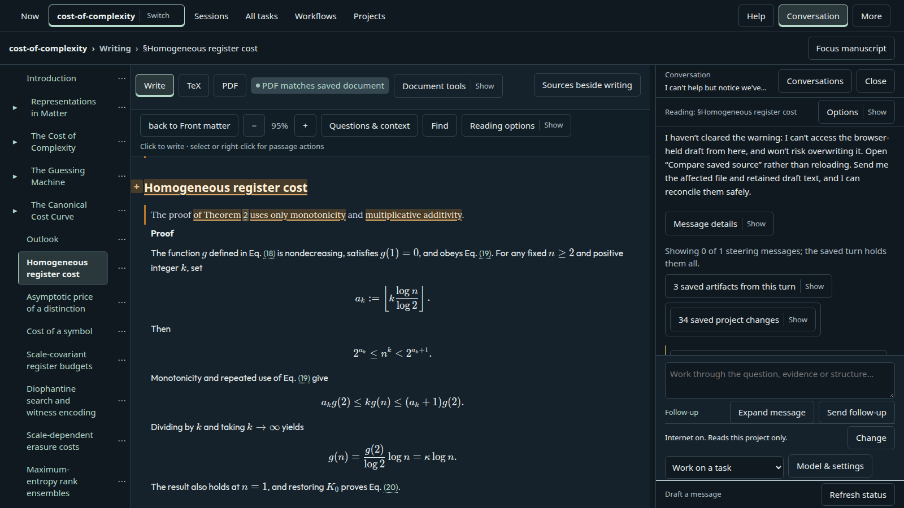
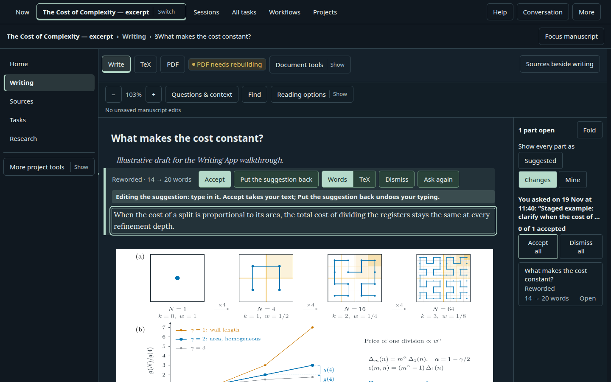
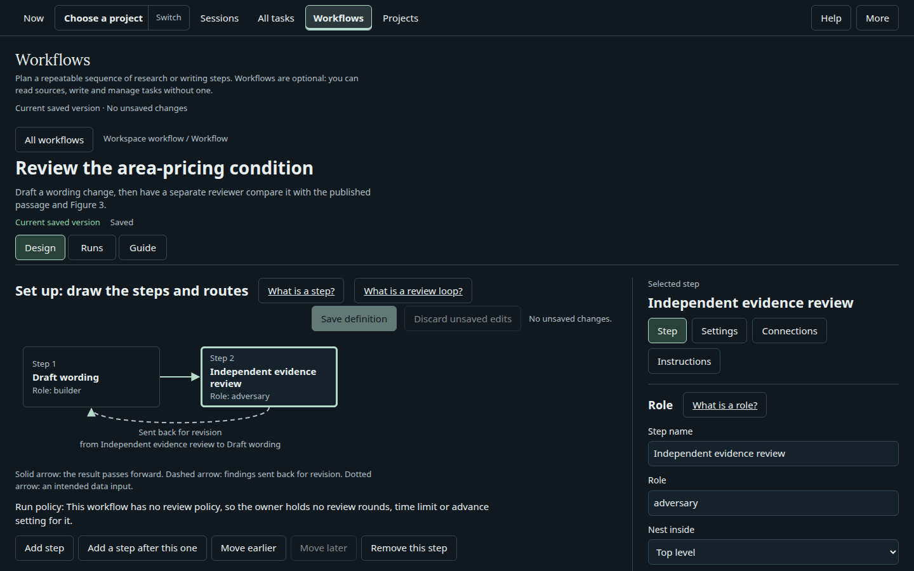
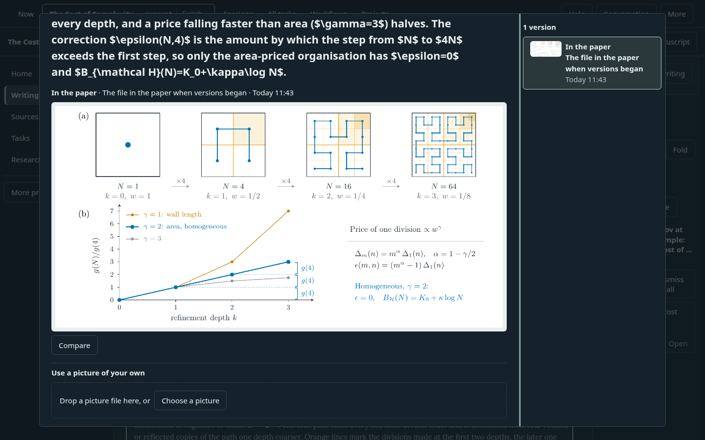

The editing workspace
The manuscript outline, working paper and conversation share one screen. These views reopen the saved editing record from 18 November.
Writing App · 18 November 2026
Explore the saved editing record for The Cost of Complexity, and see the paper packaged for arXiv later that day.

The manuscript outline, working paper and conversation share one screen. These views reopen the saved editing record from 18 November.

The proposal saved at 10:25 covers eight TeX files. In this comparison, Eigen proposes giving the idea of the proof in the main text and referring readers to Appendix A for the details.

The 18:50 turn has 34 saved project changes. The list includes a task and a revision proposal, each with links to inspect the action and its receipt.

One of nine recorded edits proposes a note distinguishing the free-energy principle’s bound on sensory surprisal from the paper’s comparison at fixed rank cost. The app keeps the original proposal and points to the later revision that resolved it.

The same section has its own activity record. It shows the author saving changes at 19:50 and again at 22:02.

The 18 November package reproduced the text on all 21 pages. This capture shows the app repeating the check on the saved manuscript. It compiled the 11-file package in an empty folder, then offered the ZIP and PDF.
Staged example
Follow a correction as the author reviews, revises, accepts and undoes it. The Writing App screens show a staged revision of an excerpt from The Cost of Complexity.
This copy contains the section on the geometry of refinement. The draft sentence leaves out the assumption that makes the cost equal at each round.
 Enlarge screen
Enlarge screen
Switch from Mine to Changes. The app highlights the added condition in the sentence it replaces.
 Enlarge screen
Enlarge screen
Select Edit to specify how the cost of an individual split depends on its area.

Enlarge screenAccepting applies the edited sentence to the working copy.
 Enlarge screen
Enlarge screen
Undo restores the draft sentence and reopens the proposal for review.
 Enlarge screen
Enlarge screen
This workflow design pairs a drafting step with independent evidence review and includes a route back for revision.

Enlarge screenThe reader plan records what the reader already knows and what the next section should help them understand.
 Enlarge screen
Enlarge screen
The figure inspector opens the image attached to the manuscript and shows its saved version.

Enlarge screenThe app lets the author adjust the reading width, show their changes and inspect open points.
 Enlarge screen
Enlarge screen
Compare the working view with Figure 3 in the released paper. Its caption states the pricing assumption for each curve.
 Enlarge figure
Enlarge figure
Screen recording
Follow the proposal, author edit, accept and undo in one recording. English captions are available in the video controls.